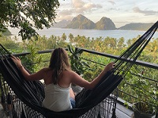
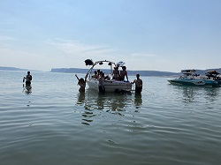

I Love to Travel
I have traveled to 3 continents, 6 countries, and 12 states. I haven't been to many places yet but I am mentally making travel plans all the time.
My favorite country that I have traveled to so far is The Philippines. My husband and I spent three weeks exploring the islands for our honeymoon in Fall 2019. The whole trip was amazing but I really enjoyed the three days we spent on a small island named Siquijor. We rented mopeds and traveled around the quiet island at our own pace. We checked out multiple waterfalls and found one awesome lagoon with rope swings!

Summertime!
Camping trips, boating, and sunshine is my happy place. I am usually sleeping in a tent near a lake or the Columbia River almost every weekend in the summer. I also LOVE going to concerts at The Gorge.
I grew up living on two different lakes, so for me, summer means spending as much time as possible near the water. While I was in college and working, I didn't have as much opportunity to enjoy the water and boating. So after we graduated college and both had full time positions, I convinced my husband we needed a boat. Now it is his favorite summertime activity as well!
One of my summertime traditions is going to concerts at The Gorge. I have attended the country music festival, Watershed, every year since 2013. One summer I went to five different concerts at The Gorge.